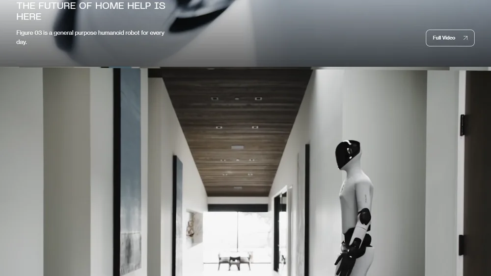

Figure AIFigure AI, Inc.
估值 390 亿美元的人形机器人明星：自研 Figure 03 本体、Helix 全身控制大模型和 BotQ 工厂，已实现每小时下线一台；在宝马工厂干活，同时把目标瞄准家庭。
一页结论
- 全栈自研：本体（Figure 03）、大脑（Helix 视觉-语言-动作模型）、制造（BotQ 工厂）全部自己做S1S3
- 量产节拍领先：BotQ 已验证每小时一台的生产节拍，产量较此前提升 24 倍，每台出厂前经过 80 多项功能测试S3
- 工业落地 + 家庭愿景：Figure 02 曾参与宝马 3 万辆车的生产，2026-06 Figure 03 进入宝马工厂；官网主打“家庭帮手”，CEO 称将以每月约 600 美元租赁给家庭S1S4
- 数据与算力重投入：8 月推出让人穿传感器采集动作数据的 Index 平台，预计一年投入 10 亿美元；与 Nscale 签约最多 10 万块 Nvidia GPUS1S4
- 争议：前产品安全负责人起诉称因提出机器人力量足以击碎人类头骨而被解雇；媒体曾质疑其宝马合作的实际规模S4
01公司介绍
02公司战略
Figure 的打法是“全栈自研 + 自建工厂 + 用机器人数量换数据”。
- 自研大模型：2025 年初停止与 OpenAI 的合作，转为自研 HelixS4
- 以量产换数据：官方称更多机器人运行时间带来更多数据，加速技术路线S3
- 人类数据采集：Index 平台让人佩戴传感器记录工作动作S1
- 工业与家庭并行：先工厂与物流，长期家庭S1S4
03产品定位与产品线
| 项目 | 内容 |
|---|---|
| 定位 | “家庭帮手的未来已来”：日常通用人形机器人S1 |
| 产品线 | Figure 01（2022）→ Figure 02（2024）→ Figure 03（2025-10）；Figure 04 设计已冻结S4 |
| 目标客户 | 制造业、物流、零售，长期家庭S1 |
| 价格 | 未公开；CEO 提出家庭租赁约每月 600 美元S4 |

04主要功能与技术路线
大脑
Helix 视觉-语言-动作模型Helix 02 全身自主；Helix 2.5 在 30 个家庭零样本泛化S1
感知
本体
数据与算力
Index 人类动作数据平台Nscale 最多 10 万块 Nvidia GPUS1
制造
BotQ 工厂：每小时一台，80+ 项出厂测试S3
05解决方案与场景
06商业模式
07上下游供应链与渠道
08主要客户与落地
09营收与财务
Figure 为未上市公司，未披露收入。已知投入：Index 数据平台预计一年 10 亿美元，Nvidia GPU 投入预计超过 35 亿美元（媒体报道）S4。2026 年 7 月公司发布声明，提醒有人未经授权兜售其股票S1。
10落地痛点
11近期动态
12潜在风险分析意见
“可能程度”为基于现有公开信息的判断，不是量化预测。
13综合结论分析意见
优势
- 本体、模型、制造全栈
- 量产节拍领先
- 充足融资
劣势
- 商业收入不透明
- 安全争议
机会
- 家庭市场
- 数据规模带来的模型进步
威胁
- Tesla、中国厂商的规模与价格
- 高投入下的现金压力
对 AI 产品团队的启示
- 具身智能的竞争是数据竞争：Figure 用更多机器人与人类数据平台扩大数据规模。
- 自研大脑是核心护城河：停止外部大模型合作、转为自研 Helix。
- 制造能力决定迭代速度：每小时一台的节拍让模型能拿到更多真实数据。
- 家庭场景的门槛是安全与泛化：比工业场景更难，也更有想象空间。
信息缺口
以下信息未找到可靠的公开来源，本报告不做推测。
- 收入与订单金额
- Figure 03 的售价与家庭租赁的正式上市时间
- 供应商名单
- 宝马部署的具体规模
来源
A 官方 · B 权威媒体或第三方 · C 社区（仅用于口碑与线索）。访问日期均为 2026-11-02。
- S1 · AFigure 官网与新闻Figure AI · 2025-09 至 2026-09
- S2 · AFigure Exceeds $1B in Series C Funding at $39B Post-Money ValuationFigure AI · 2025-09-16
- S3 · ARamping Figure 03 ProductionFigure AI · 2026-04-29
- S4 · BFigure AI（汇总 CNBC、TechCrunch、Fortune 等报道）Wikipedia